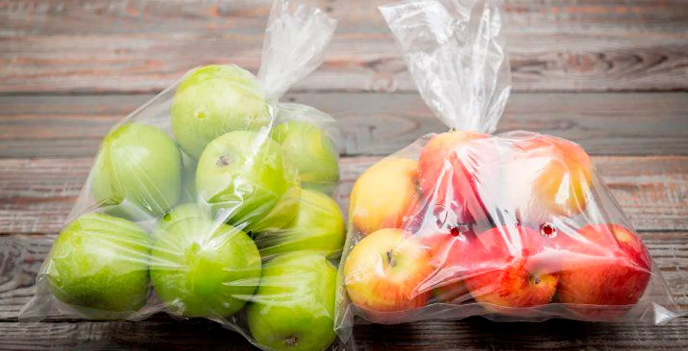
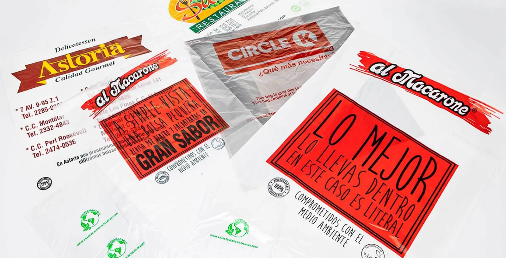
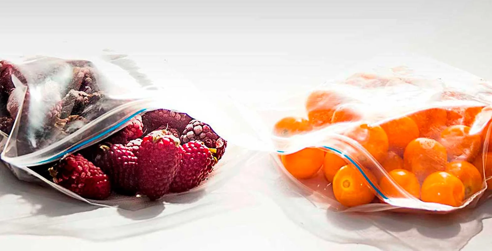

01
Referencia de catálogo
Bolsas transparentes
Familia con distintos sellos, medidas y materiales según requerimiento.

Imagen publicada por Grupo ProincoBolsas transparentes, impresas y con cierre hermético. Define formato, volumen y arte antes de solicitar fabricación.
Guarda tus referencias en una lista local y prepara el siguiente paso. Precios, variantes y existencias se revisan en cada ficha oficial.
Familia con distintos sellos, medidas y materiales según requerimiento.

Impresión de logo o diseño; requiere revisar y aprobar el arte.

Ficha de cierre hermético con opciones de impresión y perforación por consulta.
Catálogo de bolsas transparentes, impresas, herméticas y otras, bobinas y film; atención comercial mediante formulario.
Prueba cantidades y condiciones. Obtén un resumen local para revisar antes de hablar con la empresa.
Datos revisados el 3 de noviembre de 2026. La empresa confirma cualquier condición vigente.
Familia con distintos sellos, medidas y materiales según requerimiento.
Impresión de logo o diseño; requiere revisar y aprobar el arte.
Ficha de cierre hermético con opciones de impresión y perforación por consulta.
La ficha de bolsas transparentes publica medidas estándar y personalizadas.
La página indica que depende del tamaño y las especificaciones; se cotiza individualmente.
Sí. Su catálogo presenta bolsas y bobinas impresas.
La página indica que depende de volumen y diseño, después de aprobar el arte final.
Su web publica Ciudad de Guatemala.